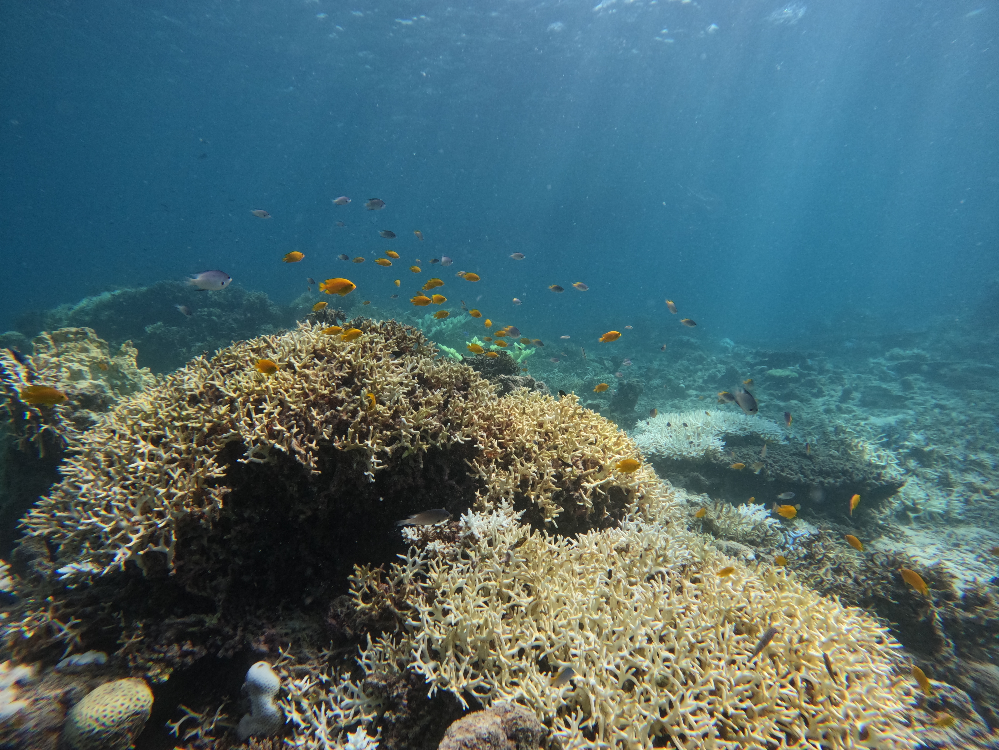

Coral reefs · Soundscapes
Biological communities · Monitoringサンゴ礁 · サウンドスケープ
生物群集 · モニタリング
Biological communities · Monitoringサンゴ礁 · サウンドスケープ
生物群集 · モニタリング
Scroll to exploreスクロールして研究を見る
Academic profiles研究者プロフィール
Google Scholar↗
ResearchGate↗
researchmap↗

01 / RESEARCH IDENTITY01 / 研究の基軸
I study coral reefs by seeing them—and by listening. サンゴ礁を「見る」こと、「聴く」ことから生態系を読み解く。
I integrate visual ecological surveys with passive acoustic monitoring to investigate soundscape dynamics and the processes that drive them.目視生態調査と受動的音響観測を統合し、サウンドスケープの動態およびその駆動要因を明らかにする研究に取り組んでいます。
Across field sites from Honshu to the Ryukyu Archipelago, I seek to understand the spatiotemporal dynamics of underwater soundscapes and to develop acoustic indicators and monitoring approaches for quantitatively capturing biological communities and ecosystem condition.本州から琉球列島を主なフィールドに、海中サウンドスケープの時空間動態を理解するとともに、音響情報を用いて生物群集や生態系の状態を定量的に捉える指標化とモニタリング手法の発展を目指しています。
02 / UPDATES02 / 最新情報